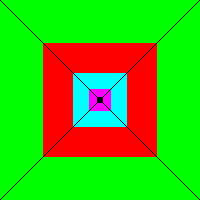
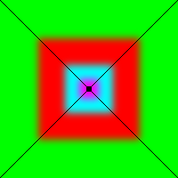
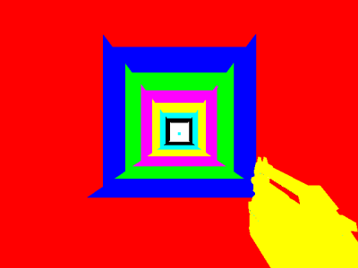
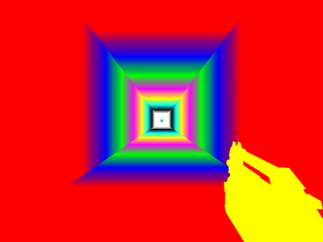

Trilinear Filtering
Trilinear texture filtering is a technique used when applying different  mipmap levels to a surface in a 3d world. When Bilinear Filtering is used, this only filters within each mip level itself, not between them, as shown in the following image:
mipmap levels to a surface in a 3d world. When Bilinear Filtering is used, this only filters within each mip level itself, not between them, as shown in the following image:

Each mip level is displayed as a solid colour. Bilinear filtering does not filter between different mip levels, which results in noticable lines where the mip level changes. |
This effect becomes vicious when the viewpoint moves, as these lines remain a fixed distance away from the viewpoint - they appear to "move" as you move.
The solution? Simly apply a linear filter between the mip levels after they have been applied, and you have trilinear filtering. The lines are gone, as now the mips blend smoothly together:

Trilinear filtering eliminates the lines between mip levels resulting in a smooth transition. |
Draconx: The images suck I know... just created them in a few seconds with photoshop. Hopefully they make enough sense.
Tarquin: I wonder whether it might be better to create articles on Wikipedia for concepts that aren't specific to the Unreal Engine? See Trilinear filtering – perhaps you'd like to incorporate your material into that article and upload your images there? We can easily link to Wikipedia with Interwiki links, and you'd get a wider audience  The pictures seem pretty clear to me, by the way, though the black lines confused me, since it's not those that are the problem. Even better would be a screenshots from a 3d game that's open source (for the purposes of Wikipedia)
The pictures seem pretty clear to me, by the way, though the black lines confused me, since it's not those that are the problem. Even better would be a screenshots from a 3d game that's open source (for the purposes of Wikipedia)
Draconx: True. I was just adding some content for pages that I saw links to but didnt exist yet. Wikipedia already has most if not all of the stuff I talked about (except the images). And those black lines on the images are *supposed* to make it look kinda eye-of-the-beholder style 1st person... but they probably fail.
Tarquin: Actually, I see what you mean – without those black lines, it would look 2-dimensional, like some concentric squares.
Switch`: The firstcoloredmip <param> console command will render each mipmap with it's own color. To enable use non-negative number as param, to disable use the command alone. It may not work in OpenGL.
 